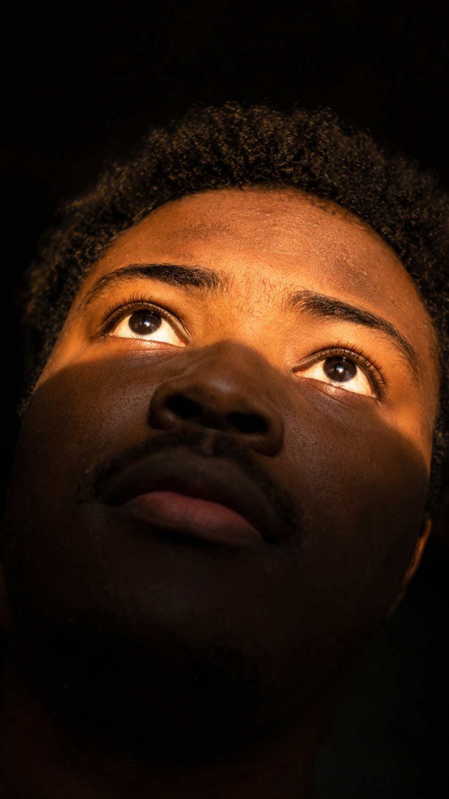
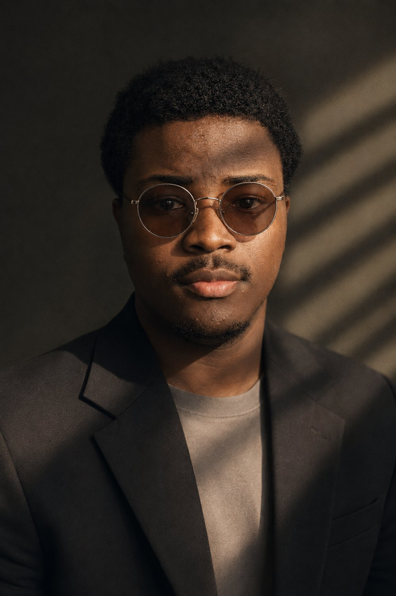

Ce qu'il te faut
ChatGPT
Avec la création d'images. Il garde ton visage reconnaissable.
Un selfie net
De face, bonne lumière, sans filtre. Une photo d'identité fait très bien l'affaire.
Une photo Pinterest
Le style, le cadrage et la lumière que tu veux pour ta photo.
Étape 1 · Ta photo
Prends une photo simple de toi, de face, avec une lumière correcte. Pas de filtre, pas de lunettes de soleil, pas d'image trop compressée. Plus elle est nette, plus on te reconnaît sur le résultat.
Étape 2 · Choisir la référence
Sur Pinterest, cherche par exemple « portrait cinématique », « street portrait », « portrait noir et blanc » ou « portrait éditorial ». Choisis une photo avec une seule personne bien visible au premier plan. ChatGPT reprend tout le reste : la pose, le cadrage, la lumière, le décor, même le flou de mouvement.
Étape 3 · Envoyer les deux photos et le prompt
Ouvre une nouvelle conversation dans ChatGPT et joins les deux photos. Précise laquelle est laquelle, par exemple : « La première photo est la référence, la deuxième, c'est moi. » Colle ensuite le prompt et envoie.
Ce que ça donne
Sur l'exemple, tout vient de la référence : la gare, la foule floue, la doudoune, le noir et blanc. Seule la personne change. Voici d'autres résultats obtenus avec d'autres références.


Si un détail cloche
Si le visage ne te ressemble pas assez ou si la pose a changé, réponds dans la même conversation. Tu peux aussi joindre un deuxième selfie pris sous un autre angle.